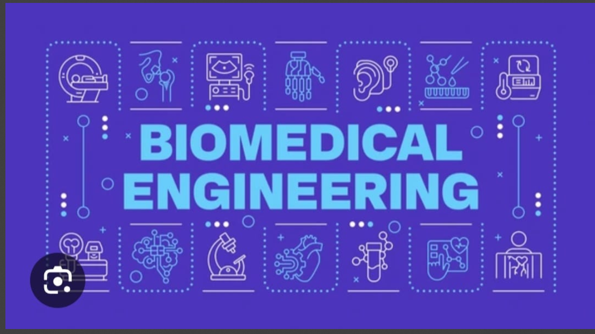

Name:
Pakeeza batool
I am a student of biomedical engineering in air university islamabad
Why I Choose biomedical engineering?

I choose this field because when I completed my FSC ,my marks were not very good like a students who want to choose the path of mbbs or mdcat so on process.so from the day after when I gave last paper,I tried my best to search the degrees which gave me advantages in future so my search shows all signs towards this degree and side by side my one of the best teacher of fsc encouraged me to choose this degree so i choose this. I just knew the name and somehow introduction of this degree before choosing this and nothing more than that.

which aspects of biomedical engineering fascinate
- anatomy
- designing medical devices
- creating new materials
- biomechanics

What I am planning to build for myself?
during my degree:
I will make sure to
- Develop practical skills through lab work.
- Learn to use biomedical software and tools for analysis and design.
- Improve my problem solving snd research skills because my basic interest is research.
After the degree:
I will make sure to
- Working in hospitals, medical organizations companies or research organizations.
- Continuing higher studies or professional certifications to enhance my expertise.
- Playing a role in improving healthcare systems and patient care
 a comprehensive deign to medical devices
biomechanics
a comprehensive deign to medical devices
biomechanics